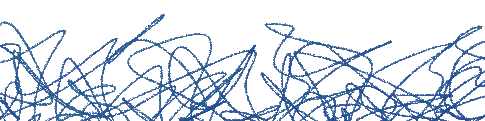

Végül elfogadsz valamit, amiről pontosan tudod, hogy messze van attól, amit valójában szeretnél. Nem azért mondasz rá igent, mert egy jó lehetőségnek tűnik, hanem azért, mert egy idő után már a kisebbik rossz is megkönnyebbülésként érződik.
Lapozz a X. oldalra és a felbukkanó lehetőségek közül válassz egyet!
